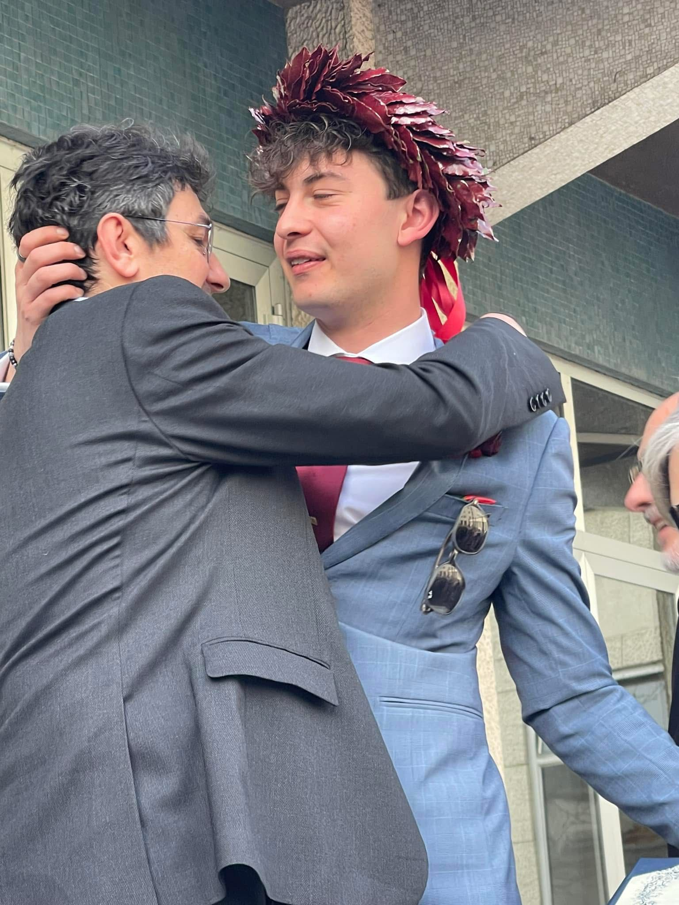

Grazie. Una parola decisamente riduttiva per la persona che, come tutti sanno — perché si vede a occhio — è il mio faro, la mia guida e la mia ispirazione. Tra di noi c’è sempre stata una complicità evidente: ho visto in tutto ciò che facevi, in ciò che eri e in ciò che diventavi esattamente quello che volevo fare io, quello che avrei voluto essere e quello che vorrei diventare. Non ce lo siamo mai detti, o forse non proprio a parole, ma quanto ci piace essere io e te? In questa nostra avventura che tu hai iniziato e nella quale io sono orgoglioso di averti seguito. Quanto ci piace stare ore a parlare dei “se”, dei “ma”, della gestione, delle strategie, delle idee. Non perché ci piaccia lavorare sempre, ma perché — diciamocelo — queste cose ci vengono bene, e ci piace ancora di più che ci vengano bene insieme. Mi piace pensare che questo sia un piccolo traguardo che ho raggiunto grazie al tuo supporto costante e incrollabile. Un traguardo piccolo rispetto a quelli grandi che ci aspettano, da affrontare io e te, uno al fianco dell’altro, in prima linea, mettendoci la faccia e il cuore, perché è così che tu mi hai insegnato a vivere. Grazie di tutto, amico, socio, mentore. Grazie di tutto, Papà.